Benchmark / Use cases / Cloud top height / Results / T44PNB-20210704
T44PNB-20210704
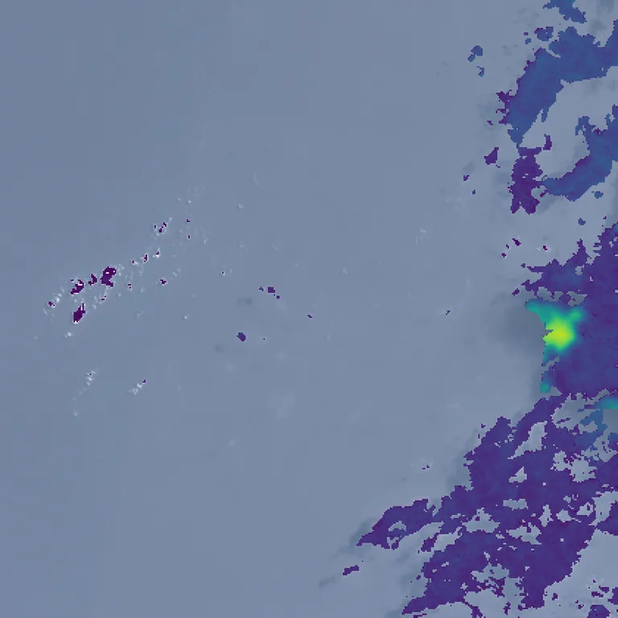
Cloud top height retrieved by Clouds Decoded, from 0 km in purple to 15 km in yellow, over the true-colour crop.
Sample
| surface | ocean |
|---|---|
| regime | few small clouds |
| product | S2B_MSIL1C_20210704T045659_N0500_R119_T44PNB_20230121T162652 |
| col_off | 1140 |
| row_off | 2340 |
Compression ratio and cloud top height
Each point is one level of a codec, named when you point at it, on this sample.
GeoZL PIVCOGeoZL PFORJPEG XLgeorvq
Change in cloud top height
GeoZL PIVCO
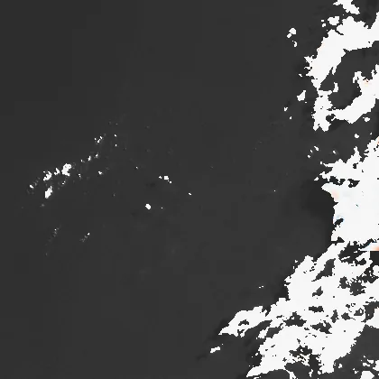
5.9× · cth_mae +31.216

8.1× · cth_mae +89.552

10.7× · cth_mae +282.837

12.8× · cth_mae +518.172
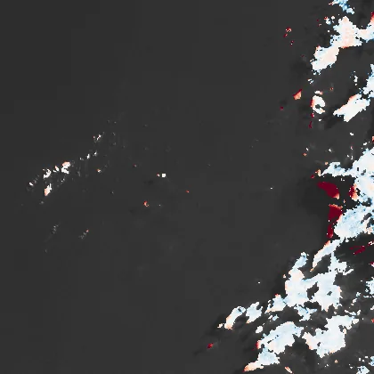
22.6× · cth_mae +674.409
GeoZL PFOR

4.6× · cth_mae +31.216
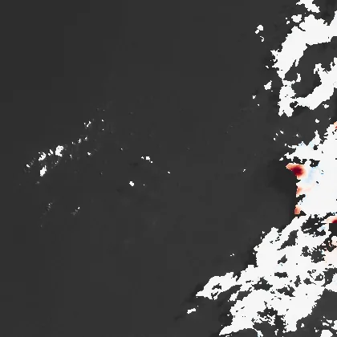
5.7× · cth_mae +89.552
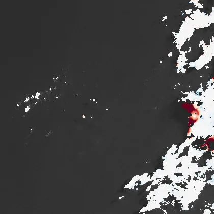
7.3× · cth_mae +282.837
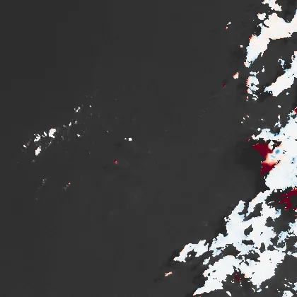
9.8× · cth_mae +518.172

19.1× · cth_mae +674.409
JPEG XL
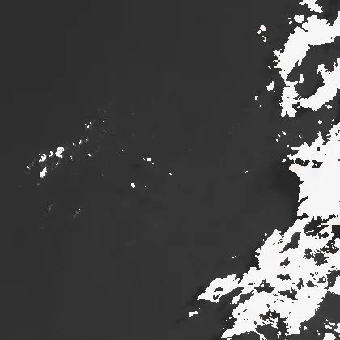
6.4× · cth_mae +25.676
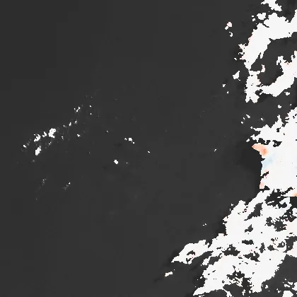
12.1× · cth_mae +61.695
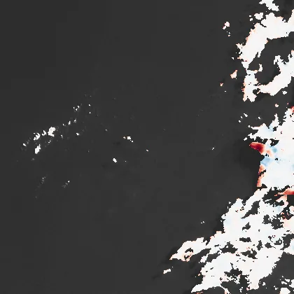
56.0× · cth_mae +185.783
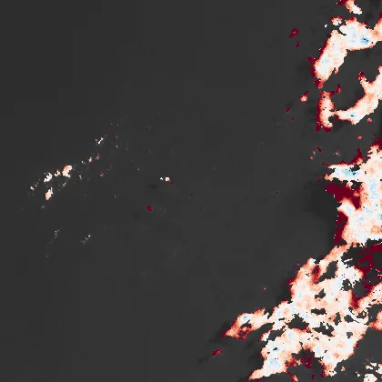
641.0× · cth_mae +1170.455
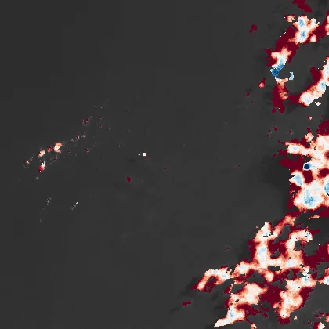
2196.7× · cth_mae +2675.620
georvq
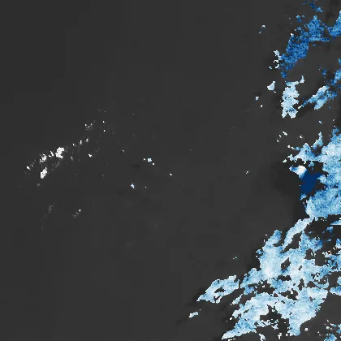
287.3× · cth_mae +1328.556
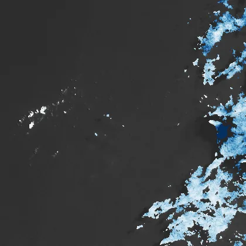
132.9× · cth_mae +1200.540
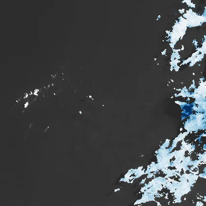
86.5× · cth_mae +765.960
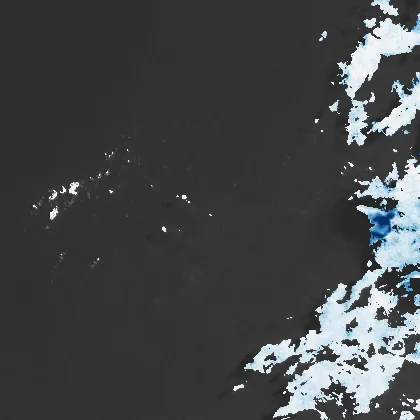
64.1× · cth_mae +566.469
50.9× · cth_mae +480.800
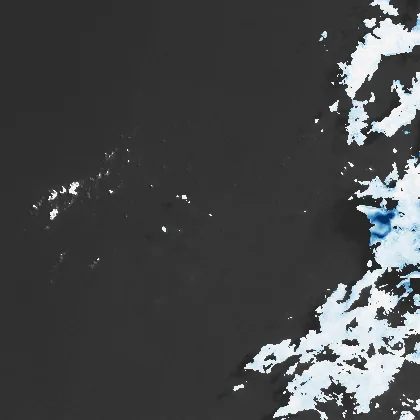
42.2× · cth_mae +418.682
36.1× · cth_mae +367.294
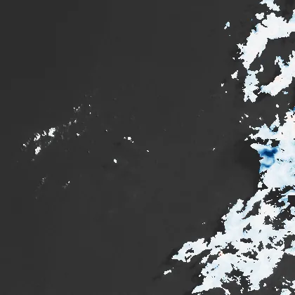
31.5× · cth_mae +320.996
27.9× · cth_mae +291.525